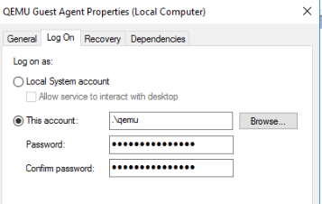
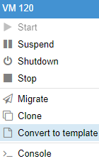

Кастомизация гостевых ОС Windows в KVM на примере Proxmox
В VMware Vsphere есть удобный механизм кастомизации ОС при деплое — OS Customization
С помощью него можно например ввести виртуальную машину в домен или запустить скрипты после деплоя.
Это очень удобно, особенно при развертывании сотни виртуальных машин. Похожий механизм захотелось иметь и в KVM.
В этой статье мы рассмотрим как обеспечить похожий функционал на примере Proxmox и шаблона Windows
Для начала нам необходимо подготовить шаблон ОС, из которой мы будем деплоить наши виртуальные машины.
Создайте новую VM, установите на нее ОС, например Windows Server 2016.
Установите на машину необходимые драйвера и qemu агент, он есть в образе с драйверами
После установки qemu агента, создайте локальную учетную запись, откройте службы windows и настройте запуск службы qemu агент не от local system, а от ранее созданной УЗ

Теперь нужно выполнить на машине sysprep с файлом ответа.
Я буду использовать следующий файл ответа, можете использовать его как пример или сгенерировать свой, например тут
файл ответов unattend.xml
<?xml version="1.0" encoding="utf-8"?> <unattend xmlns="urn:schemas-microsoft-com:unattend"> <settings pass="windowsPE"> <component name="Microsoft-Windows-International-Core-WinPE" processorArchitecture="amd64" publicKeyToken="31bf3856ad364e35" language="neutral" versionScope="nonSxS" xmlns:wcm="http://schemas.microsoft.com/WMIConfig/2002/State" xmlns:xsi="http://www.w3.org/2001/XMLSchema-instance"> <SetupUILanguage> <UILanguage>en-US</UILanguage> </SetupUILanguage> <InputLocale>0c09:00000409</InputLocale> <SystemLocale>en-US</SystemLocale> <UILanguage>en-US</UILanguage> <UILanguageFallback>en-US</UILanguageFallback> <UserLocale>en-US</UserLocale> </component> <component name="Microsoft-Windows-Setup" processorArchitecture="amd64" publicKeyToken="31bf3856ad364e35" language="neutral" versionScope="nonSxS" xmlns:wcm="http://schemas.microsoft.com/WMIConfig/2002/State" xmlns:xsi="http://www.w3.org/2001/XMLSchema-instance"> <ImageInstall> <OSImage> <InstallTo> <DiskID>0</DiskID> <PartitionID>2</PartitionID> </InstallTo> </OSImage> </ImageInstall> <UserData> <AcceptEula>true</AcceptEula> <FullName>admin</FullName> <Organization></Organization> <ProductKey> <Key>WC2BQ-8NRM3-FDDYY-2BFGV-KHKQY</Key> </ProductKey> </UserData> <EnableFirewall>true</EnableFirewall> <RunSynchronous> <RunSynchronousCommand wcm:action="add"> <Order>1</Order> <Path>net user administrator /active:yes</Path> </RunSynchronousCommand> </RunSynchronous> </component> </settings> <settings pass="offlineServicing"> <component name="Microsoft-Windows-LUA-Settings" processorArchitecture="amd64" publicKeyToken="31bf3856ad364e35" language="neutral" versionScope="nonSxS" xmlns:wcm="http://schemas.microsoft.com/WMIConfig/2002/State" xmlns:xsi="http://www.w3.org/2001/XMLSchema-instance"> <EnableLUA>false</EnableLUA> </component> </settings> <settings pass="generalize"> <component name="Microsoft-Windows-Security-SPP" processorArchitecture="amd64" publicKeyToken="31bf3856ad364e35" language="neutral" versionScope="nonSxS" xmlns:wcm="http://schemas.microsoft.com/WMIConfig/2002/State" xmlns:xsi="http://www.w3.org/2001/XMLSchema-instance"> <SkipRearm>1</SkipRearm> </component> </settings> <settings pass="specialize"> <component name="Microsoft-Windows-International-Core" processorArchitecture="amd64" publicKeyToken="31bf3856ad364e35" language="neutral" versionScope="nonSxS" xmlns:wcm="http://schemas.microsoft.com/WMIConfig/2002/State" xmlns:xsi="http://www.w3.org/2001/XMLSchema-instance"> <InputLocale>0c09:00000409</InputLocale> <SystemLocale>en-AU</SystemLocale> <UILanguage>en-AU</UILanguage> <UILanguageFallback>en-AU</UILanguageFallback> <UserLocale>en-AU</UserLocale> </component> <component name="Microsoft-Windows-Security-SPP-UX" processorArchitecture="amd64" publicKeyToken="31bf3856ad364e35" language="neutral" versionScope="nonSxS" xmlns:wcm="http://schemas.microsoft.com/WMIConfig/2002/State" xmlns:xsi="http://www.w3.org/2001/XMLSchema-instance"> <SkipAutoActivation>true</SkipAutoActivation> </component> <component name="Microsoft-Windows-SQMApi" processorArchitecture="amd64" publicKeyToken="31bf3856ad364e35" language="neutral" versionScope="nonSxS" xmlns:wcm="http://schemas.microsoft.com/WMIConfig/2002/State" xmlns:xsi="http://www.w3.org/2001/XMLSchema-instance"> <CEIPEnabled>0</CEIPEnabled> </component> <component name="Microsoft-Windows-Shell-Setup" processorArchitecture="amd64" publicKeyToken="31bf3856ad364e35" language="neutral" versionScope="nonSxS" xmlns:wcm="http://schemas.microsoft.com/WMIConfig/2002/State" xmlns:xsi="http://www.w3.org/2001/XMLSchema-instance"> <ComputerName>srv1</ComputerName> </component> </settings> <settings pass="oobeSystem"> <component name="Microsoft-Windows-Shell-Setup" processorArchitecture="amd64" publicKeyToken="31bf3856ad364e35" language="neutral" versionScope="nonSxS" xmlns:wcm="http://schemas.microsoft.com/WMIConfig/2002/State" xmlns:xsi="http://www.w3.org/2001/XMLSchema-instance"> <AutoLogon> <Password> <Value>PASS</Value> <PlainText>true</PlainText> </Password> <Enabled>true</Enabled> <Username>administrator</Username> </AutoLogon> <OOBE> <HideEULAPage>true</HideEULAPage> <HideLocalAccountScreen>true</HideLocalAccountScreen> <HideOEMRegistrationScreen>true</HideOEMRegistrationScreen> <HideOnlineAccountScreens>true</HideOnlineAccountScreens> <HideWirelessSetupInOOBE>true</HideWirelessSetupInOOBE> <NetworkLocation>Work</NetworkLocation> <ProtectYourPC>1</ProtectYourPC> <SkipMachineOOBE>true</SkipMachineOOBE> <SkipUserOOBE>true</SkipUserOOBE> </OOBE> <UserAccounts> <AdministratorPassword> <Value>RooTqwerty123</Value> <PlainText>true</PlainText> </AdministratorPassword> <LocalAccounts> <LocalAccount wcm:action="add"> <Description>admin</Description> <DisplayName>admin</DisplayName> <Group>Administrators</Group> <Name>admin</Name> </LocalAccount> <LocalAccount wcm:action="add"> <Password> <Value>PasswordGoesHere</Value> <PlainText>true</PlainText> </Password> <Description>Local Administrator</Description> <DisplayName>Administrator</DisplayName> <Group>Administrators</Group> <Name>Administrator</Name> </LocalAccount> </LocalAccounts> </UserAccounts> <RegisteredOrganization></RegisteredOrganization> <RegisteredOwner>admin</RegisteredOwner> <DisableAutoDaylightTimeSet>false</DisableAutoDaylightTimeSet> <TimeZone>Russian Standard Time</TimeZone> </component> </settings> </unattend>
Теперь сохраните этот файл на своей виртуальной машине, которую вы только что настроили и развернули и планируете использовать как шаблон.
Далее запустите на ней sysprep.
команда запуска будет следующая:
sysprep.exe /generalize /oobe /unattend:c:\unattend.xml /shutdown
Выполнение этой команды применит файл ответов и выключит виртуальную машину.
После этого она будет готова к деплою.
Теперь преобразуйте ее в шаблон в веб интерфейсе proxmox

На этом этапе шаблон полностью готов.
Теперь нам нужен скрипт деплоя VM с хоста.
Скрипт будет выполнять следующее:
1) Клонировать VM из шаблона
2) Включать VM после деплоя, проверять запуск qemu агента и вводить машину в домен Active Directory или просто переименовывать.
Это будет делать следующий скрипт, который нужно запускать с хоста гипервизора:
#!/bin/bash
########EXAMPLE
# ./deploy.sh 118 testsrv2 testvm join
# where:
# 118 - template ID
# testsrv2 - new virtual machine name
# testvm - qemu pool name
# run command to join AD domain inside guest OS
###############
########DOMAIN CREDENTIALS
login='administrator'
password='RooTqwerty12345'
domain='test-temp.local'
###########################
vm=$2
template=$1
lastid=$(ls /etc/pve/qemu-server/ | sed s/.conf// | tail -n1)
newid=$((lastid + 1))
pool=$3
join=$4
echo "##############START_DEPLOY############################"
echo "VM ID IS $newid"
if [ "$pool" = "none" ];
then
qm clone $template $newid -name $vm #-pool $pool
else
qm clone $template $newid -name $vm -pool $pool
fi
echo "Clone complete"
echo 'Your VM name is '$vm''
echo "Start VM - $vm"
qm start $newid
while [ -n "$(qm agent $newid ping 2>&1 > /dev/null)" ]; do
sleep 0.5
echo "Waiting qemu agent on VM - $vm"
done
echo "Waiting guest OS"
for i in {1..240}
do
left=$[240 - $i]
echo "Waiting guest OS on VM - $vm."
echo "Time left $left sec.."
sleep 1
done
echo "Send command to customize VM - $vm (ASYNC)"
if [ -n "$join" ];
then
echo "Send command to join domain $domain for VM - $vm"
echo '{"execute":"guest-exec", "arguments":{"path":"powershell.exe","arg":["-command","add-computer", "-NewName '$vm'", "-restart", "-DomainName '$domain'", "-force", "-Credential $(New-Object System.Management.Automation.PsCredential(\u0027'$login'\u0027,$(ConvertTo-SecureString -String \u0027'$password'\u0027 -AsPlainText -Force)))"]}}' | socat /var/run/qemu-server/$newid.qga -
else
echo "Send command to rename hostname on VM - $vm"
echo '{"execute":"guest-exec", "arguments":{"path":"powershell.exe","arg":["-command","rename-computer", "-NewName '$vm'", "-restart", "-force", "-LocalCredential $(New-Object System.Management.Automation.PsCredential(\u0027'login'\u0027,$(ConvertTo-SecureString -String \u0027'$password'\u0027 -AsPlainText -Force)))"]}}' | socat /var/run/qemu-server/$newid.qga -
fi
echo "Deploy VM - $vm - complete"
echo "##############COMPLETE############################"
Пример запуска скрипта
./deploy.sh 118 testsrv2 testvm join
Где:
118 — ID ранее созданного шаблона
testsrv2 — имя создаваемой VM
testvm — имя ресурсного пула qemu (если не указывать машин будет просто склонирована на тот же хост)
join — ввод виртуальной машины в домен после клонирования (если не указывать машина будет просто переименована, без ввода в домен)
В секции ниже измените учетные данные для подключения к домену и его адрес:
########DOMAIN CREDENTIALS login='administrator' password='RooTqwerty12345' domain='test-temp.local' ###########################
Таким образом можно развернуть и кастомизировать VM по аналогии с VMware Guest Customization.
Но если нам нужно развернуть не одну а 10 или 100 виртуальных машин?
Добавим следующий скрипт для запуска этого процесса:
#!/bin/bash
######EXAMPLE
# ./start_deploy.sh 118 testvm join
# where:
# 118 - template ID
# testvm - qemu pool name
# join - run join to AD domain command inside guest os
# add vms names to file vms.list
#############
START=$(date +%s)
file=./vms.list
template=$1
pool=$2
join=$3
while IFS='' read -r line || [[ -n "$line" ]]; do
echo "Start job for VM - $line"
./deploy.sh $template $line $pool $join
done < "$file"
END=$(date +%s)
DIFF=$(( $END - $START ))
DIFFMIN=$[$DIFF / 60]
echo "Deploy time - $DIFFMIN minutes"
Пример запуска:
./start_deploy.sh 118 testvm join
Где:
118 — ID ранее созданного шаблона
testvm — имя ресурсного пула qemu (если не указывать машин будет просто склонирована на тот же хост)
join — ввод виртуальной машины в домен после клонирования (если не указывать машина будет просто переименована, без ввода в домен)
Построчный список VM сохраните в файле vms.list
Теперь вы можете автоматизировать деплой ваших виртуальных машин на базе Windows в KVM.
Процесс настройки конечно отличается от VMware, но на то он и open source.
Добавить комментарий